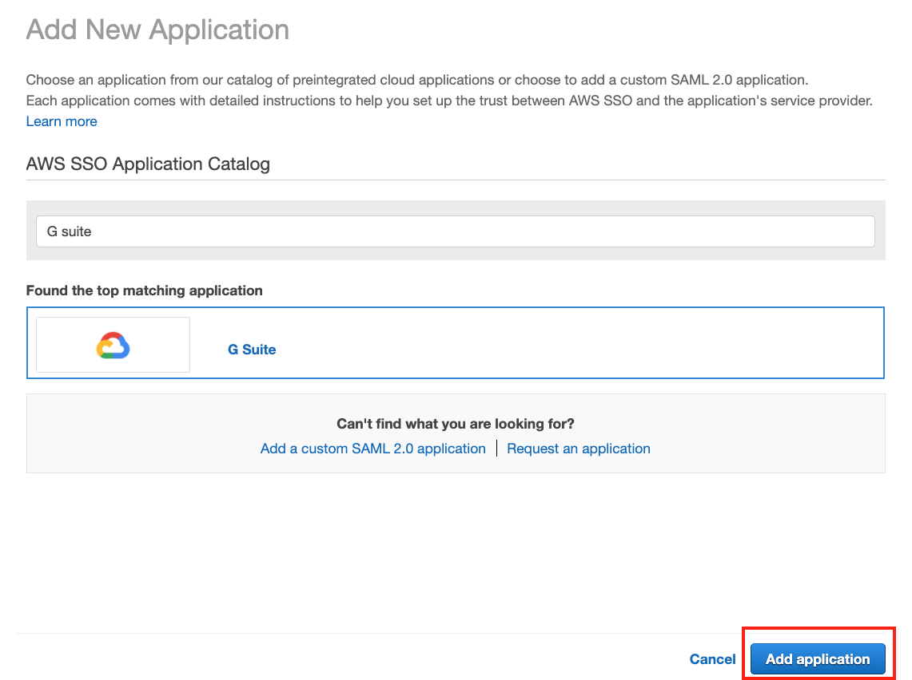
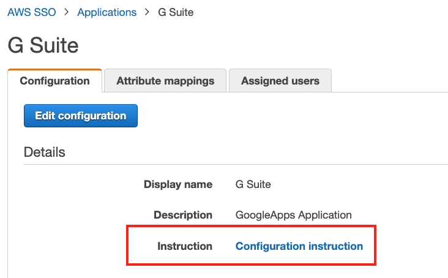
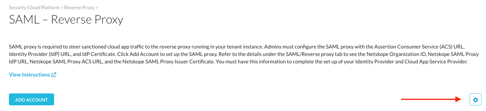
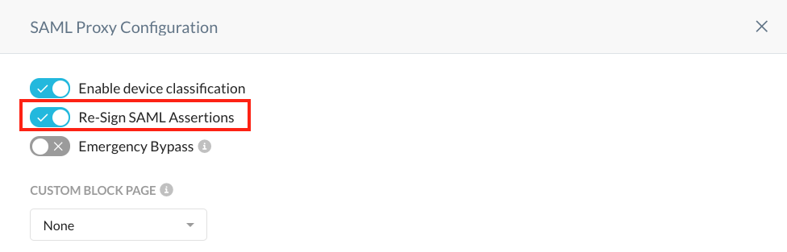

Integrate SAML Reverse Proxy for Google Workspace with AWS Single Sign-On
Log in to the AWS Admin Console.
If you haven’t already, reference the Getting Started Guide for AWS Single-Sign On. At the time of this writing, the guide was found here: https://docs.aws.amazon.com/singlesignon/latest/userguide/getting-started.html
Select Manage SSO Access to Your Cloud Applications.
Select Add a New Application.
Search for G Suite and click Add application.
 Follow the Configuration Instruction guide to get a working SSO configuration before proceeding to the next step. Ensure that the G Suite and AWS configuration is working properly before proceeding.
 Keep the Google SSO and AWS SSO configuration windows open.
Log in to the Netskope tenant.
Go to Settings > Security Cloud Platform > Reverse Proxy > SAML.
Click Add Account and select G Suite from the dropdown list. Enter these parameters:
Provide a descriptive name
Copy the ACS URL from your AWS SSO configuration for G Suite and paste it in the ACS URL field in the Netskope G Suite configuration.
Copy the AWS SSO sign-in URL from the AWS SSO configuration for G Suite and paste it in the IDP URL field in the Netskope G Suite configuration.
Download the AWS SSO certificate and open it in a text editor.
Copy and paste the certificate in the IDP Certificate field in the Netskope G Suite configuration.
When finished, click Save.

Select the magnifying glass next to the Google configuration in Netskope.
Copy the Netskope SAML Proxy IdP URL and paste it in the Sign-in page URL field in the Google SSO with third party IDPs configuration.
Copy the Netskope SAML Proxy Issuer Certificate and save it as a
samlproxy.cer.Replace the certificate with
samlproxy.cerand save the changes.Copy the Netskope SAML Proxy ACS URL and paste it in the Application Metadata section in the AWS Application ACS URL field.

Save your changes.
In the “SAML - Reverse Proxy” page in Netskope, select the gear icon as shown in the screenshot
 Ensure that Re-Sign SAML Assertions is enabled.
 Open an incognito window or ensure you are completely logged out of any Google or AWS accounts.
Go to accounts.google.com, logon with your AWS credentials.
You should see the URL rewritten as below

In the Netskope console, go to SkopeIT > Application Events. You should see events logged here.